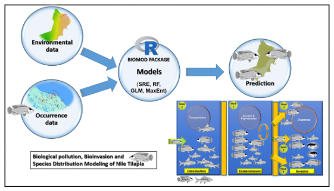

← All projects2023–Present / Collaborative Research
Research project Collaborative Research
Climate Change and the Distribution of Invasive Freshwater Fish
2023–Present

This project investigates how climate and land-use changes may reshape the potential distributions of invasive freshwater fish in Western Asia. To date, two species have been investigated: Nile tilapia (Oreochromis niloticus) and topmouth gudgeon (Pseudorasbora parva). The research uses species distribution modelling to assess changes in habitat suitability, potential distribution shifts, and invasion risks.